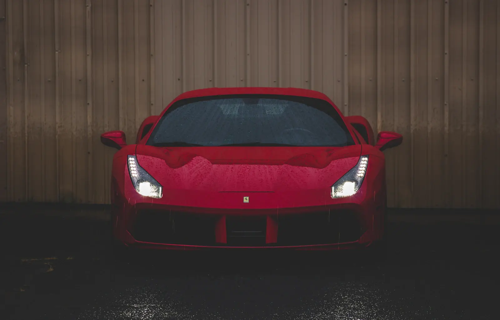
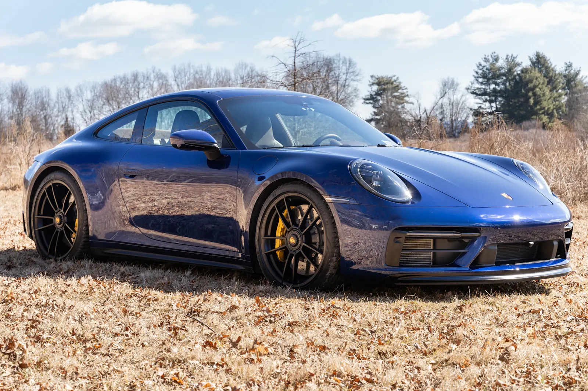

ВАШ ДЕНЬ.
ВАШ ТЕМП.

Один автомобиль — и привычный
маршрут становится событием.
Не просто
марка в заявке.
Для короткой поездки, длинной дороги
или дня, который хочется запомнить.

Porsche 911
Для тех, кому важен сам маршрут. Собранный характер и узнаваемый силуэт — повод выбрать дорогу подлиннее.
- Сценарий
- Поездка за город
- Перед поездкой
- Знакомство с управлением и маршрутом
- Условия и стоимость
- Согласуются в ответе на запрос
Выходной без расписания.
Встреча, на которую хочется приехать.
Дорога, ради которой стоит выехать.
Всё понятно
заранее.
- 01
Соберите запрос
Выберите автомобиль, даты и повод поездки. Отправка запроса не означает бронирование.
- 02
Уточните условия
Доступность, стоимость, депозит, лимит пробега и требования к водителю должны быть согласованы до оплаты.
- 03
Примите автомобиль
Осмотр, фиксация состояния, документы и знакомство с управлением — до начала поездки.
- 04
Верните без вопросов
Время, место возврата и порядок закрытия депозита фиксируются в договоре заранее.
МАРШРУТ
НАЧИНАЕТСЯ
ЗДЕСЬ.
Это демонстрация запроса на аренду.
Реального бронирования и оплаты здесь нет.
Перед поездкой
Можно ли сразу оплатить аренду?
На этой странице — портфолио-концепт. Оплаты и реального бронирования нет. В работающем прокате сначала подтверждают доступность автомобиля и условия договора.
Что нужно уточнить у проката?
Требования к возрасту и стажу, страховое покрытие, депозит, пробег, территорию поездки, топливо и правила возврата. Все суммы и ограничения должны быть в договоре.
Можно ли выехать на трек?
Не следует считать обычную аренду разрешением на трек или соревнования. Такой сценарий требует отдельного согласования и страхования.